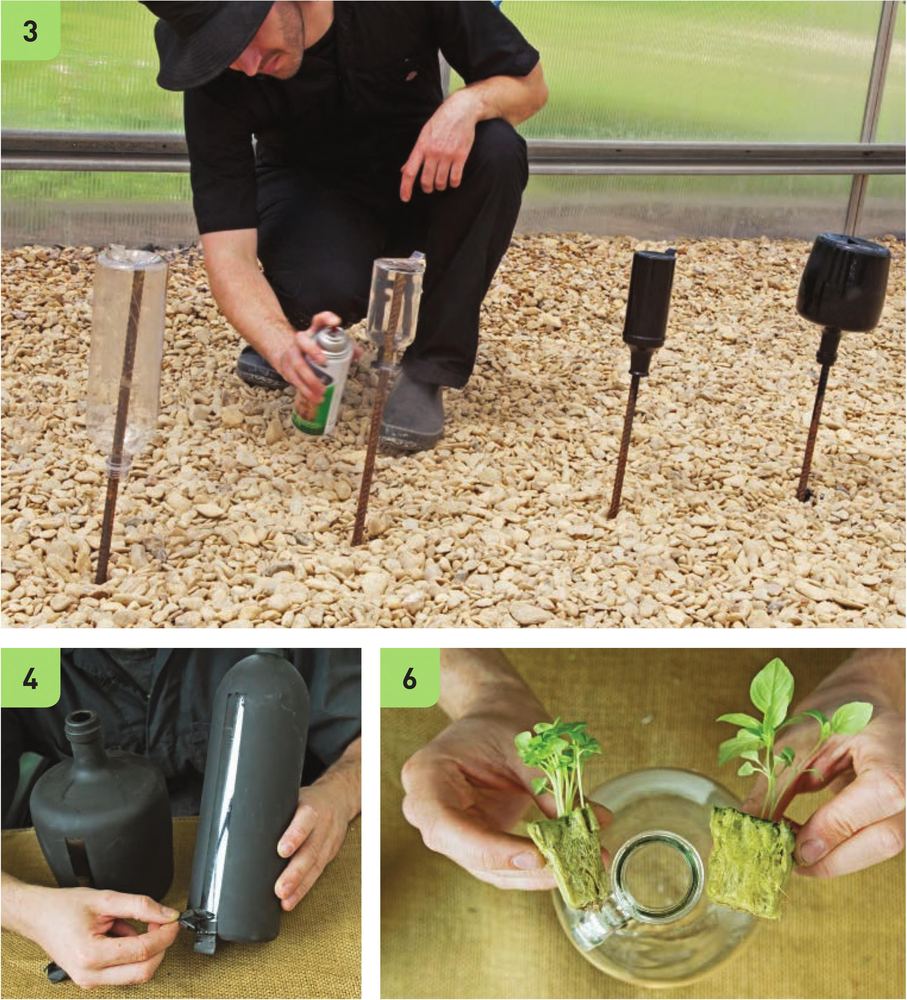

3 My preferred method for painting bottles is putting them on a stake, but I've also had success dipping bottles in paint. Make sure there are enough coats of paint that light will not penetrate inside the bottle. 4 Remove the tape strip once the paint dries. 5 It is best to do any chalk art at this point before filling the bottle with water. Plug Selection Either select a plug that fits snugly in the neck of the bottle or select a bottle with an opening suitable to your plugs. It is possible to cut a stone wool plug to fit a smaller bottle but this can potentially damage the seedling's roots. 6 The plug should be wide enough to hold itself firmly in the opening of the bottle. 7 Growing more seedlings than needed allows you greater options to select only the best seedlings for your hydroponic bottle. 46 DIY HYDROPONIC GARDENS

